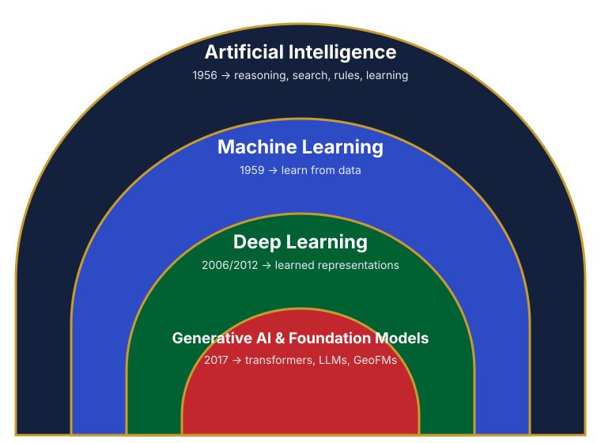
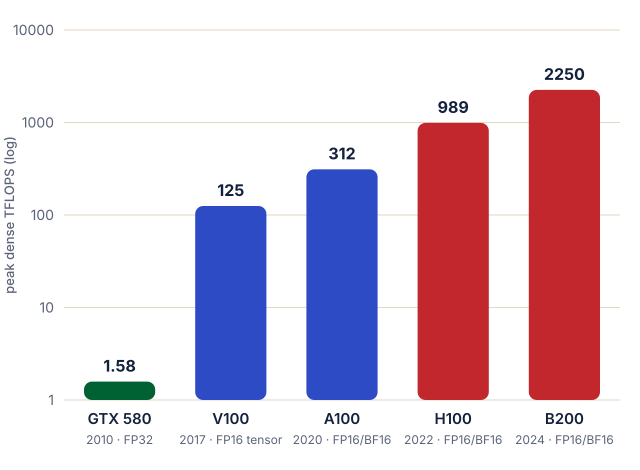
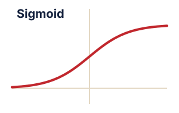
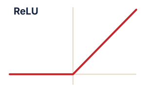
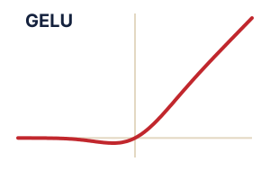
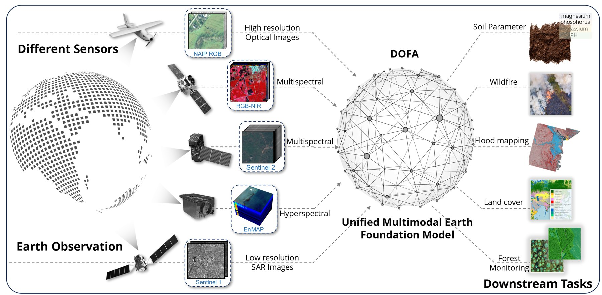
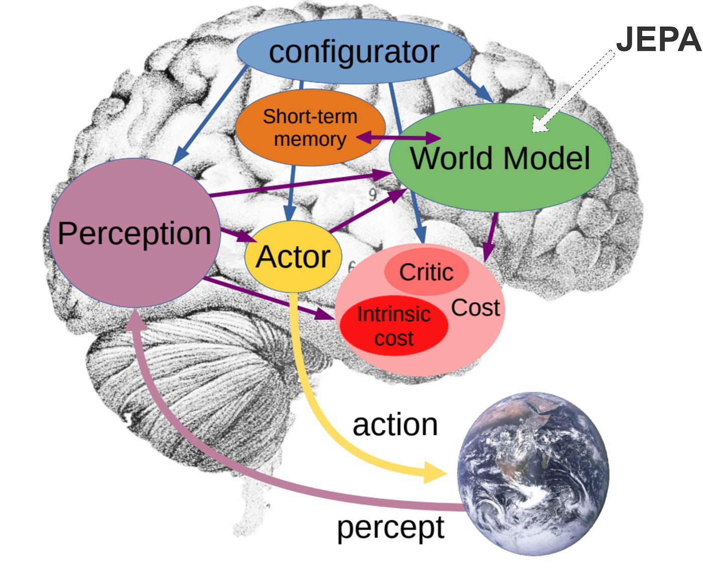

AI for
Earth Observation
Course map: the history of AI, in order
| Part | Theory | Practice (EO) |
|---|---|---|
| I · History & paradigms | Turing's learning machine, symbolic AI and two winters, AI ⊃ ML ⊃ DL ⊃ GenAI, the four learning paradigms | Paradigms playground |
| II · Statistical ML | Data cube, empirical risk, likelihood, bias–variance · naive Bayes, trees, forests, boosting, SVM · ARD, clouds, labels · spatial CV, rare-class metrics, area estimation | 6 learner playgrounds · Lab 1 · land cover, spatial CV |
| III · Unsupervised learning | k-means, Gaussian mixtures & EM, DBSCAN, PCA | Lab 2 · clusters, PCA, change detection |
| IV · Reinforcement learning | MDPs, value iteration, Q-learning, bandits → deep RL & RLHF | Lab 3 · irrigation, satellite tasking |
| Break | ||
| V.1 · DL foundations | Why deep learning took off; neuron → perceptron, gradient descent, back-prop, MLP | Lab 4 · perceptron & MLP |
| V.2 · Vision & CNNs | Pixels to filters · convolution, ResNet, U-Net · detection · SAR–optical fusion | Labs 5–6 · EuroSAT, LandCover.ai |
| V.3–V.5 · Sequences, generation, attention | RNN/LSTM · GANs & diffusion · Transformers, ViT | Labs 7–9 · ETo, SAR→optical, ViT |
| Break | ||
| V.6–V.7 · Foundation models | Self-supervised learning, LLMs & RAG · GeoFMs, physics + ML | Labs 10–12 · RAG, Prithvi, AlphaEarth |
| V.8 · Tabular FMs | In-context learning, priors, TabArena, scoring rules | TabArena explorer |
| V.9–V.10 · Trust & agents | Calibration, uncertainty, explanations, domain shift · bias, carbon, privacy · agents, MCP, LangGraph | Lab 13 · Sentinel-2 agent |
By the end of this course you will be able to…
Explain
how each family — statistical learners (Bayes, trees, ensembles, SVM), clustering and PCA, Q-learning and bandits, MLP, CNN, RNN/LSTM, GAN, Transformer, foundation model, LLM agent — represents data and learns, with the key equation of each.
Choose
the right architecture for an EO problem: pixels, scenes, segmentation, time series, image translation, multimodal cubes, documents or workflows.
Build
working scikit-learn, PyTorch, TerraTorch, Earth Engine, LangChain and LangGraph pipelines, validated with spatial cross-validation and area estimates.
From Turing to the four paradigms
- Eighty years of AI on one line
- Turing's learning machine — the loop behind every model in this course
- Symbolic AI, expert systems and two winters
- AI ⊃ machine learning ⊃ deep learning ⊃ generative AI
- Four ways a machine learns: supervised, unsupervised, self-supervised, reinforcement (live demo)
Eighty years in one line
Alan Turing's learning machine (1950)
In §7 of Computing Machinery and Intelligence Turing argues that programming an adult mind by hand is hopeless. Instead, build a child machine — little mechanism, many “blank sheets” — and educate it.
| Turing's idea | Modern counterpart |
|---|---|
| Child machine + education | Model with random init + training on data |
| Rewards & punishments | Reinforcement learning, RLHF for LLMs |
| Changing “rules” during learning | Updating parameters θ |
| Random element in the machine | Stochastic gradient descent, dropout |
| Hereditary material · mutation · selection | Architecture search, evolutionary methods |
| Teacher ignorant of inner workings | The interpretability problem |
Unorganised machines (1948)
Turing's NPL report described networks of randomly connected two-input “neurons” whose connections can be switched on or off by training — a neural network a decade before the perceptron.
Four nested ideas, one arch

- Artificial intelligence — any technique that makes machines act intelligently: search, logic, rules and learning.
- Machine learning — performance at a task improves with experience (data) instead of explicit programming.
- Deep learning — ML with many stacked, differentiable layers that learn their own features from raw signals (pixels, spectra, time series, text).
- Generative AI & foundation models — very large models, usually Transformers, pre-trained on broad data and adapted to many tasks.
Four ways a machine learns: what is the feedback?
| Paradigm | Training data | Feedback signal | Learns to… | EO example | In this course |
|---|---|---|---|---|---|
| Supervised | inputs with labels (x,y) | the correct answer for every sample | map x→y: classify or regress | land-cover map from labelled Sentinel-2 pixels; yield regression | II (statistical ML) · V.1–V.5 · Labs 1, 4–9 |
| Unsupervised | inputs only x | none — the structure is the result | find groups, directions, density | ISODATA / k-means classes, PCA of 13 bands, change detection | III (clustering, PCA) · Lab 2 · V.7 (embeddings) |
| Self-supervised | inputs only, at scale | labels made from the data itself: hide part, predict it | general-purpose representations | masked-band pre-training (Prithvi), AlphaEarth embeddings | V.6 (SSL, LLMs) · V.7 (GeoFMs) · Labs 10–12 |
| Reinforcement | experience the agent collects by acting | a scalar reward, often delayed | a policy: which action in which state | satellite tasking, UAV survey paths, irrigation control | IV (MDPs, Q-learning, bandits) · Lab 3 · V.6 (RLHF) · V.10 (agents) |
on the whole unlabelled archive — petabytes of Sentinel/Landsat, or the web’s text
on a few hundred labelled chips for your task — floods, crops, buildings
from human or task rewards (RLHF) — what turns an LLM into an assistant or agent
frozen weights on new scenes; unsupervised tools to explore and check the outputs
One EO problem, four kinds of feedback
Supervised · learn from answers
Each training pixel comes with its label yi — water, vegetation or soil — drawn by an analyst or taken from field data. The model fits a function that reproduces those answers and generalises to new pixels.
Filled points are labelled; hollow ones are what the map is scored on. Try: 1 label per class, then 40 — labels are the expensive part of EO.
Unsupervised · find structure
The same pixels without labels. The algorithm groups pixels that look alike; it never learns the words “water” or “crop” — an analyst names the clusters afterwards.
Try: k = 3 recovers the cover types; k = 5 splits vegetation along its vigour gradient. Is that wrong? Only the analyst can tell.
Self-supervised · the data labels itself
Hide some Sentinel-2 bands of a pixel and predict them from the others. The hidden values are the target, so millions of unlabelled pixels become training data. A model that solves this has learned how spectra behave — the idea behind MAE and geospatial foundation models.
Try: hide 7–9 bands, then compare the learned guess with a naive straight line between visible bands.
Reinforcement · learn from rewards
A survey drone must reach a flooded village. No one shows it the route: it acts, gets a reward (−1 per move, −10 for flying into a storm cell, +20 at the village) and updates its action values by Q-learning.
Try: run single episodes first — early flights wander or crash — then +100 and watch the arrows settle on a safe route.
Learning from examples
- The classical-ML era: from naive Bayes and the first SVM to random forests and XGBoost
- Theory: the EO data cube, loss and empirical risk, likelihood, bias and variance (live demo)
- Naive Bayes, decision trees, random forests, boosting, SVM — each with its maths, live
- EO data for ML: analysis-ready data, clouds & compositing, where labels come from
- An honest score: spatial cross-validation, rare-class metrics, area estimation
- Lab 1 — land cover from Sentinel-2 with classical learners, scored with spatial CV
The classical-ML era: statistics meets computing
The paradigm
Hand-designed features → a shallow model with a clean objective (often convex) and guarantees from statistical learning theory: control the capacity, not just the training error.
In remote sensing
Gaussian maximum-likelihood classifier (1970s–90s) → SVM for hyperspectral data (2000s) → random forest as the default in Earth Engine (2010s).
Still alive
On tabular features, tuned tree ensembles still match or beat deep nets (Grinsztajn et al., 2022). Cheap, strong baselines for every EO project.
Everything is a tensor: the EO data cube
| Model input | Shape | Example |
|---|---|---|
| Pixel spectrum | C | 13 Sentinel-2 bands |
| Image patch | C×H×W | EuroSAT 13×64×64 |
| Pixel time series | T×C | daily ERA5 weather, 365×6 |
| Image time series | T×C×H×W | Prithvi: 4×6×224×224 |
Naive Bayes — classify by probability
“Naive” = bands independent given the class
Each class is a product of 1-D Gaussians, so its ellipses stay aligned with the axes. Training = means and variances per class: one pass, works with a handful of pixels.
EO classic · maximum-likelihood classifier
Keep the full covariance: p(x∣k)∝∣Σk∣−1/2e−21(x−μk)⊤Σk−1(x−μk). Ellipses tilt along the soil line; boundaries become quadratic. The standard supervised classifier of remote sensing for decades.
Decision trees — learned IF–THEN rules
The learned rules (top two levels)
Bagging & random forests — many noisy trees, one calm vote
Two sources of randomness
- Bootstrap: each tree sees n pixels drawn with replacement; averaging B trees shrinks the B1−ρ term.
- Random features: each split tries only m≈p bands, so trees decorrelate and ρ drops.
- Out-of-bag: (1−n1)n→e−1≈ 37 % of pixels are unused by each tree — a free validation set.
ee.Classifier.smileRandomForest): robust to label noise and to 100+ stacked features. Prefer permutation importance — impurity importance is biased.Boosting I · AdaBoost — learn from your mistakes
Sequential, not parallel
Each weak learner — a one-split stump (dashed gold line) — trains on re-weighted pixels: the ones the ensemble still gets wrong grow bigger. AdaBoost is stage-wise minimisation of the exponential loss e−yF(x).
Try it
Seasons (XOR): single-season crops vs bare land and orchards in (NDVI March, NDVI July). A sum of stumps uses one band at a time and cannot model the interaction — switch to depth-2 trees. Bagging cuts variance; boosting cuts bias, but it chases mislabelled pixels.
Boosting II · Gradient boosting — fit the residuals, step by step
XGBoost · LightGBM · CatBoost
Newton (second-order) steps and regularised leaves, L=∑iℓ(yi,y^i)+∑k(γTk+21λ∥wk∥2); histogram splits, missing-value handling, GPU training.
Support vector machines — the widest street
Kernel trick & sparsity
Only the support vectors (gold rings) define the boundary. A kernel computes dot products in a high-dimensional feature space without building it. Small C: wide, tolerant margin; large C and γ: tight, wiggly fit.
Five classical learners at a glance
| Model | Learns… | Strengths | Watch out | Typical EO use |
|---|---|---|---|---|
| Naive Bayes / MLC | class densities p(x∣k) | instant training, probabilities, few samples | Gaussian & independence assumptions | quick baselines, classic land-cover maps |
| Decision tree | axis-aligned IF–THEN splits | readable rules, no scaling, mixed feature types | unstable, over-fits when deep | rule-based products, capturing expert knowledge |
| Random forest | vote of decorrelated bootstrap trees | robust defaults, OOB error, importances | large models, no extrapolation, biased importance | land cover & crop types (Earth Engine) |
| Gradient boosting | additive trees fitted to gradients | top accuracy on tabular features | tuning, early stopping, noisy labels | yield, ET, biomass, soil-moisture regression |
| SVM | max-margin boundary in kernel space | high-d, small-n; few hyper-parameters | O(n2) kernel matrix; scale features; tune C,γ | hyperspectral, few-label problems |
The classical-ML era: you design the features
- SVM — maximise the margin; kernels give non-linear boundaries.
- Random forest — bagged decision trees; robust, fast, gives feature importance. Still the workhorse of land-cover mapping in Earth Engine.
- Gradient boosting — trees fitted to residuals; strong on tabular EO features.
import numpy as np from sklearn.ensemble import RandomForestClassifier from sklearn.model_selection import GroupKFold, cross_val_score # X_bands: (n_pixels, 10) Sentinel-2 L2A reflectances # y: land-cover label, groups: id of the polygon each pixel came from def indices(X): B2, B3, B4, B8, B11 = X[:, 0], X[:, 1], X[:, 2], X[:, 6], X[:, 8] ndvi = (B8 - B4) / (B8 + B4 + 1e-6) ndwi = (B3 - B8) / (B3 + B8 + 1e-6) ndbi = (B11 - B8) / (B11 + B8 + 1e-6) # built-up return np.c_[X, ndvi, ndwi, ndbi] F = indices(X_bands) rf = RandomForestClassifier(n_estimators=300, n_jobs=-1, class_weight="balanced") # group-wise CV: pixels of one polygon never in train AND test scores = cross_val_score(rf, F, y, groups=groups, cv=GroupKFold(5), scoring="f1_macro") print(f"macro-F1 = {scores.mean():.3f} ± {scores.std():.3f}")
From raw scenes to analysis-ready data
import pystac_client, odc.stac cat = pystac_client.Client.open("https://earth-search.aws.element84.com/v1") items = cat.search(collections=["sentinel-2-l2a"], bbox=[-8.1, 31.5, -7.8, 31.8], # Marrakech datetime="2024-03-01/2024-05-31", query={"eo:cloud_cover": {"lt": 60}}).item_collection() ds = odc.stac.load(items, bands=["red", "green", "blue", "nir", "scl"], crs="EPSG:32629", resolution=10, chunks={}) clear = ~ds.scl.isin([0, 3, 8, 9, 10]) # nodata, shadow, cloud, cirrus composite = ds[["red", "green", "blue", "nir"]].where(clear).median("time")
Analysis-ready data
Surface reflectance, per-pixel quality flags, one map grid and full metadata, so that two dates or two sensors can be compared without more processing (CEOS CARD4L).
Easy to get wrong
- Mixing L1C and L2A, or scale factors and offsets
- Resampling categorical masks with bilinear interpolation
- Misregistration of a few pixels between dates or sensors
- Training on clear scenes, predicting on hazy ones
Where do the labels come from?
| Source | Strength | Watch out for |
|---|---|---|
| Field survey | closest to the truth; attributes you cannot see | few, clustered along roads; GPS error; date |
| Photo-interpretation of VHR | many labels, fast, any location | interpreter disagreement; image date ≠ satellite date |
| Existing maps (WorldCover, Dynamic World, cadastre) | wall-to-wall, free | you inherit their errors; circular if you also test on them |
| OpenStreetMap, crowdsourcing (Geo-Wiki) | buildings, roads, many countries | uneven completeness, rich areas mapped first |
| Weak labels (rules, indices, time series) | millions of samples at no cost | systematic, correlated noise |
Label noise
Wrong class, shifted polygon, or a label from another date. A few % of random noise is tolerated; systematic noise is learned as truth.
Imbalance
Rare classes (settlements, landslides, ships): stratified sampling, class weights, Dice or focal loss −(1−pt)γlogpt.
Spatial autocorrelation: why random splits flatter you
Choose the split for the question
Spatial blocks or leave-region-out when the map extends beyond the sampled area. A random probability sample of the map makes ordinary CV unbiased (Wadoux et al. 2021).
Finding structure without labels
- The unsupervised-learning era: Pearson's PCA to ISODATA and DBSCAN
- k-means and unsupervised classification of an image (live)
- Gaussian mixtures and EM; density clustering with DBSCAN
- Principal component analysis — the first representation learning
- Lab 2 — clustering, PCA and change detection on Sentinel-2
Learning without labels: the unsupervised era
The task
Only {xi}, no y. Find structure in p(x): groups (clustering), directions (dimensionality reduction), densities (mixtures, anomalies).
In remote sensing
Unsupervised classification (k-means / ISODATA, then an analyst names the clusters), PCA / MNF for multi- and hyperspectral data, PCA-based change detection.
Why it matters now
Labels are scarce, pixels are not. Self-supervised pre-training (Chapter V.6) is the modern heir: learn the structure of unlabelled archives first.
k-means — assign, update, repeat
Coordinate descent on J
Each step can only lower J, so the algorithm always converges — but to a local minimum that depends on the start. k-means++ picks each new centre with probability ∝D(x)2, the squared distance to the nearest centre already chosen.
Unsupervised classification: cluster first, name later
The classic workflow
- stack bands, standardise
- cluster all pixels (k-means / ISODATA)
- an analyst labels each cluster
- merge or split clusters, check accuracy
Try it
Visible bands only: fields and roofs blur together. Add NIR and SWIR: purity against the true cover jumps — more spectral information, better clusters.
Gaussian mixtures — soft clusters, learned by EM
EM in one sentence
Guess who belongs where (E), refit each Gaussian to its weighted pixels (M), repeat. The log-likelihood never decreases. k-means is the hard-assignment limit of EM with equal round covariances.
DBSCAN — clusters of any shape, plus noise
No k, no round shapes
Clusters grow through chains of dense neighbourhoods, so they follow rivers and roads. Isolated points stay noise (grey ×). Hover to see the ε-disc around the cursor.
PCA — the directions of greatest variance
Lab 2 · Clusters, components and change — no labels
from sklearn.decomposition import PCA from sklearn.cluster import KMeans from sklearn.mixture import GaussianMixture from sklearn.metrics import adjusted_rand_score from skimage.filters import threshold_otsu Z = (X - X.mean(0)) / X.std(0) # valid pixels × 10 bands, standardised pca = PCA(n_components=6).fit(Z) print(pca.explained_variance_ratio_.cumsum()) # 3 PCs ≈ 98 % of the variance km = KMeans(n_clusters=7, n_init=10, random_state=0).fit(Z[sample]) gmm = min((GaussianMixture(k, covariance_type="full", random_state=0).fit(Z[sample]) for k in range(2, 13)), key=lambda g: g.bic(Z[sample])) print("ARI vs WorldCover:", adjusted_rand_score(wc_flat[sample], km.labels_)) # change between two springs: change-vector magnitude + Otsu threshold d = np.linalg.norm(Z_2024 - Z_2019, axis=-1) # same grid, standardised per date change = d > threshold_otsu(d[np.isfinite(d)])
What you build
- PCA of 10 bands: loadings, PC1–3 false colour
- k-means (elbow, silhouette) and Gaussian mixtures (BIC); clusters named after the fact
- Change map 2019 → 2024 by change-vector analysis, checked against the imagery
Try
- DBSCAN in PC space: which pixels are “noise”?
- k = 12: do new clusters split a class or find a new one?
- Run the change step on two dates of one year — what is seasonal?
Learning by trial and error
- The reinforcement-learning era: Thorndike, Bellman, Q-learning, AlphaGo
- Markov decision processes and value iteration (live)
- Q-learning and the exploration–exploitation dilemma: bandits (live)
- Lab 3 — irrigation scheduling and satellite tasking
- From tables to networks: deep RL and RLHF — the bridge to deep learning
Learning by trial and error: the RL era
What is different
No labels — only a scalar reward, often delayed. The agent's own actions choose its data, so it must balance exploring against exploiting.
In Earth observation
Satellite tasking and scheduling, UAV survey paths, adaptive field sampling, irrigation and reservoir control — and RLHF behind the LLMs and agents of Chapters V.6 and V.10.
Markov decision processes — the Bellman equation
Planning with a known model
Value iteration applies the Bellman update to every state. It is a γ-contraction, so Vk→V∗ from any start; values spread outward from the rewards, sweep by sweep.
Try it
Raise slip (wind pushes the drone sideways): the policy leaves the short path between the storms for a safer detour. Lower γ: the far village stops being worth it. Click a free cell to add a mountain, then a storm.
Q-learning — learn values from experience
Model-free
No transition model: the drone only sees (s,a,r,s′) and bootstraps from its own estimates (temporal-difference learning). Q-learning is off-policy: it learns the greedy policy while behaving ε-greedily.
Exploration matters
With ε = 0 the drone may lock onto the first route that worked. Too much ε and it keeps flying into storms. Learning rate α trades speed for noise.
From tables to networks: deep RL and RLHF
RLHF — how chat LLMs are aligned
P(yw≻yl)=σ(rϕ(x,yw)−rϕ(x,yl)); then maxθ E[rϕ(x,y)]−βKL(πθ∥πref).
| EO problem | State → action → reward |
|---|---|
| Satellite tasking | queue, clouds → which target next → value of images acquired |
| UAV survey | map so far → where to fly → area covered per battery |
| Irrigation control | soil moisture, ET, forecast → water amount → yield − water cost |
Deep learning: from one neuron to agents
- V.1 Foundations: neuron, gradient descent, back-prop, MLP
- V.2 Vision: convolution and CNNs
- V.3 Sequences: RNN and LSTM
- V.4 Generation: GANs and diffusion
- V.5 Attention and Transformers
- V.6 Self-supervised learning, foundation models, LLMs
- V.7 Geospatial foundation models
- V.8 Tabular foundation models
- V.9 Trustworthy and responsible AI
- V.10 Agentic AI
The shift: from feature engineering to representation learning
Classical pipeline
Knowledge lives in the features. New sensor or region ⇒ redesign.
Deep pipeline
Knowledge lives in the weights, learned end-to-end by gradient descent.
Why now? Data × algorithms × compute
Data
- ImageNet (2009): 14 M labelled images
- Landsat archive opened free in 2008
- Copernicus Sentinels: free & open, petabytes per year
- Labels from crowdsourcing & OpenStreetMap
Algorithms
- ReLU: gradients that do not vanish
- Dropout, batch-norm, Adam
- Residual connections (ResNet): 100+ layers
- Self-supervised pre-training
Compute
- GPUs: thousands of cores for matrix maths
- CUDA (2007) made them programmable
- TPUs & tensor cores (2016–17)
- Cloud platforms: Earth Engine, Planetary Computer
Deep learning is matrix multiplication — chips made it cheap
| Chip | Design | Good at |
|---|---|---|
| CPU | Few powerful cores, big caches | Branchy, sequential code |
| GPU | Thousands of simple cores, SIMT | Parallel multiply–add on tensors |
| Tensor core | Matrix-multiply unit inside a GPU | Mixed precision (FP16/BF16/FP8) |
| TPU | Systolic array (Google, 2015–16) | Dense matmul at scale |

Training compute grew ~10 orders of magnitude
- Before 2010 compute followed Moore's law (doubling ≈ every 2 years).
- In the deep-learning era it doubled roughly every ~6 months (Sevilla et al., 2022).
- Scaling laws: loss falls as a power law of parameters, data and compute — the bet behind LLMs and Earth foundation models.
- Cost now matters: carbon-aware training is one of the “ideal Earth FM” features (Chapter V.7).
From the logical neuron to the perceptron
Convergence theorem (Novikoff, 1962)
If the classes are linearly separable with margin γ and ∥x∥≤R, the perceptron makes at most (R/γ)2 mistakes — then stops. If they are not separable, it never settles.
Rosenblatt's Mark I Perceptron was hardware: a 20×20 photocell “retina”, potentiometer weights driven by motors.
Playground: water vs vegetation from Red & NIR
Separable case
Water absorbs NIR; vegetation reflects it strongly. A single line in (Red, NIR) space separates them — the perceptron finds it in a few epochs. The line it learns is a cousin of NDVI.
XOR: the 1969 critique
Load XOR: no straight line works, the error never reaches 0. Minsky & Papert proved single-layer limits; funding dried up for a decade.
Gradient descent — walk downhill
- Learning rate η: too small = slow, too big = divergence or oscillation. Try it →
- Stochastic GD: estimate ∇L on a mini-batch of 32–512 patches; noise helps escape poor minima.
- Momentum / Adam: average past gradients and rescale per parameter — the default optimisers today (AdamW for Transformers).
- Non-convex loss: start point and η decide which valley you land in.
Multi-layer perceptron: stack, bend, repeat
- Each layer = linear map (rotate/stretch) + non-linear bend φ. Without φ the whole net collapses to one linear map.
- Hidden layers solve XOR: they re-represent the input so classes become linearly separable at the last layer.
- Universal approximation (Cybenko 1989; Hornik 1991): one wide hidden layer can approximate any continuous function on a compact set — but depth makes it far more efficient.
- Parameters: 13→128→64→10 has 13·128+128 + 128·64+64 + 64·10+10 = 10 698 weights.
Back-propagation = the chain rule, applied backwards
- Forward pass computes and caches every intermediate value.
- Backward pass multiplies local derivatives from the loss back to each weight — one sweep gives all gradients at ≈ the cost of one forward pass.
- PyTorch/JAX do this automatically (autograd): you write the forward pass,
loss.backward()does the rest. - Products of many small factors (σ′ ≤ 0.25) ⇒ vanishing gradients in deep or recurrent nets — the motivation for ReLU, ResNets and LSTMs.
Activation functions: where the non-linearity lives

σ(z)=1+e−z1 — probabilities, gates in LSTMs. Saturates ⇒ vanishing gradients.
tanhz — zero-centred, used in RNN/LSTM states. Also saturates.

max(0,z) — cheap, gradient 1 when active. Default for CNNs since AlexNet.

zΦ(z) — smooth ReLU used in Transformers (BERT, ViT, Prithvi).
Seeing space: from pixels to CNNs
- Vision fundamentals, live: RGB, multispectral & hyperspectral pixels; grayscale, thresholding, filtering; SAR speckle
- Convolution: locality, weight sharing, equivariance — from LeNet to ResNet and U-Net
- Running CNNs on large scenes: tiles, padding and normalisation
- Labs 5–6 — EuroSAT transfer learning, U-Net on LandCover.ai
- Object detection: anchors, IoU, NMS, average precision
- SAR + optical fusion: mapping under clouds
A digital image is a grid of numbers
| Resolution | Question | Sentinel-2 |
|---|---|---|
| Spatial | How big is a pixel? | 10 / 20 / 60 m |
| Spectral | Which wavelengths? | 13 bands, 443–2190 nm |
| Radiometric | How many levels? | 12-bit; L2A stored as uint16 |
| Temporal | How often? | ≈ 5 days (two satellites) |
Beyond RGB: multispectral & hyperspectral
| Sensor | Bands | Band width | Examples |
|---|---|---|---|
| RGB | 3 | ~100 nm, visible only | phones, drones, very-high-res imagery |
| Multispectral | 4–15 | 15–180 nm, with gaps | Sentinel-2 (13), Landsat 8/9 (11) |
| Hyperspectral | 200+ | 5–10 nm, contiguous | EnMAP, PRISMA, AVIRIS |
Convolution, one window at a time
Multiply, add, slide
Each output is a dot product of the kernel with one window: large where the window looks like the kernel. Sobel fires on the field edge and the small bright building.
Filtering — kernels are feature detectors
Kernel
Application: filtering SAR speckle
Speckle is multiplicative
Echoes of many scatterers in one cell interfere. The mean blurs edges and bright targets; median and Lee adapt to local contrast. Sentinel-1 GRD ≈ 4–5 looks: filter, then threshold for flood maps — or let a CNN learn the despeckler.
Three priors that make images learnable
Locality
A pixel is explained by its neighbours: a roof edge, a field boundary, a river bank. Each neuron looks at a small window (3×3).
Weight sharing
The same filter slides over the whole image. A “bright-line detector” is useful everywhere — so learn it once.
Equivariance
Shift the input, the feature map shifts the same way. A building is a building in any corner of the tile.
Building blocks and the feature hierarchy
Receptive field
Each layer widens what a neuron “sees”. Two 3×3 convs see 5×5; with down-sampling a deep neuron covers hundreds of metres on Sentinel-2.
Pooling
Max/average pooling summarise a window: robustness to small shifts, cheaper compute. Global average pooling feeds the classifier.
Normalisation
Batch-norm stabilises training; with multispectral data, normalise inputs per band with dataset statistics.
A short family tree of CNN architectures
| Year | Model | Key idea |
|---|---|---|
| 1998 | LeNet-5 | Conv + pooling + FC, trained end-to-end |
| 2012 | AlexNet | ReLU, dropout, GPUs, data augmentation |
| 2014 | VGG / GoogLeNet | Deep stacks of 3×3; multi-branch Inception |
| 2015 | ResNet | Residual connections: 50–152 layers train fine |
| 2015 | U-Net | Encoder–decoder + skip connections for pixel masks |
| 2017–19 | DenseNet, EfficientNet | Feature reuse; compound scaling of width/depth/res |
| 2022 | ConvNeXt | CNN modernised with Transformer-era design |
Why ResNet matters
∂y/∂x=∂F/∂x+I: the “+I” keeps gradients alive through very deep nets — the same trick lives inside every Transformer block.
What CNNs do in Earth observation
| Task | Output | Typical model | Benchmark data |
|---|---|---|---|
| Scene classification | one label per tile | ResNet, EfficientNet | EuroSAT, BigEarthNet |
| Semantic segmentation | label per pixel | U-Net, DeepLabv3+ | LandCover.ai, Sen1Floods11 |
| Object detection | boxes (rotated) | Faster R-CNN, YOLO | DOTA, xView |
| Building footprints | instance masks | Mask R-CNN, U-Net | SpaceNet |
| Change detection | change mask | Siamese U-Net | OSCD, LEVIR-CD |
| Super-resolution / regression | image or value per pixel | SRCNN, ResNet regressors | Sentinel-2 ↔ VHR pairs |
Two sensors, one map: SAR + optical
| Optical (Sentinel-2) | SAR (Sentinel-1) | |
|---|---|---|
| Measures | reflected sunlight, 13 bands: pigments, water, minerals | backscatter: roughness, structure, moisture |
| Clouds, night | blocked | sees through, day and night |
| Noise | haze, shadows, sun angle | speckle, layover, incidence angle |
| Strong at | crop type, vegetation health | water and floods, built-up, forest structure |
Data & models
SEN12MS, BigEarthNet-MM, SEN12MS-CR (cloud removal), Sen1Floods11 · multimodal encoders CROMA, DOFA, TerraMind.
Mapping under clouds with SAR
What to look for
Optical alone fails under clouds; SAR alone confuses soil and vegetation; stacking without a mask trusts cloudy pixels. Fusion with a mask keeps the best of both.
Learning time: RNN & LSTM
- Recurrence, back-propagation through time, vanishing gradients
- LSTM gates — a memory cell you can train
- EO time series: phenology, crops, hydrology, ETo
- Lab 7 — forecasting reference evapotranspiration
Recurrent networks: a loop with memory
- A state ht summarises the past: an NDVI trajectory, a week of weather.
- BPTT: unroll in time and back-propagate through all steps.
LSTM: a gated memory cell
The key line
ct=ft⊙ct−1+… is additive. When ft≈1 information and gradients flow unchanged across many steps — the same “identity highway” idea as ResNet, ten years earlier.
Reading the gates in EO terms
- Forget: drop the memory of last season after harvest
- Input: store a rainfall event that will matter for soil moisture
- Output: expose the memory when the crop starts greening
Where time matters in Earth observation
Crop-type mapping
Sentinel-2 time series per parcel → LSTM / temporal attention. Phenology (green-up, peak, harvest) separates wheat from barley better than any single date (BreizhCrops benchmark).
Hydrology
LSTMs trained on hundreds of catchments predict river discharge from meteorological forcings and rival process models (Kratzert et al., 2018).
Nowcasting
ConvLSTM replaces matrix products with convolutions to forecast radar-precipitation fields — space and time.
Evapotranspiration & drought
Forecast FAO-56 reference ETo from temperature, radiation, wind and humidity for irrigation scheduling — Lab 7, with a Marrakech example.
Lab 7 · Forecast next-week ETo with an LSTM
import pandas as pd, requests url = "https://archive-api.open-meteo.com/v1/archive" q = dict(latitude=31.63, longitude=-8.01, # Marrakech start_date="2000-01-01", end_date="2024-12-31", daily="et0_fao_evapotranspiration,temperature_2m_max," "temperature_2m_min,shortwave_radiation_sum," "wind_speed_10m_max,precipitation_sum", timezone="UTC") df = pd.DataFrame(requests.get(url, params=q).json()["daily"]) df["time"] = pd.to_datetime(df["time"]); df = df.set_index("time") # windows: 30 days of features -> next 7 days of ETo def windows(a, target, lookback=30, horizon=7): X, Y = [], [] for t in range(lookback, len(a) - horizon): X.append(a[t - lookback:t]); Y.append(target[t:t + horizon]) return np.stack(X), np.stack(Y) # temporal split: 2000-18 train | 2019-21 val | 2022-24 test
class EToLSTM(nn.Module): def __init__(self, n_in, hidden=64, horizon=7): super().__init__() self.lstm = nn.LSTM(n_in, hidden, num_layers=2, batch_first=True, dropout=0.2) self.head = nn.Linear(hidden, horizon) def forward(self, x): # x: (B, 30, n_in) out, (h, c) = self.lstm(x) return self.head(out[:, -1]) # (B, 7) mm/day
Evaluate honestly
- Baselines: persistence (tomorrow = today) and day-of-year climatology
- RMSE and R² per lead day (1…7)
- Add sin/cos of day-of-year as inputs
Learning to generate
- Autoencoders → GANs: a two-player game
- Conditional GANs (pix2pix, CycleGAN) and diffusion
- EO uses: SAR→optical, cloud removal, super-resolution
- Lab 8 — Sentinel-1 → Sentinel-2 translation
GANs: a forger and a detective
At the equilibrium of this game, pG=pdata and D=21 everywhere. In practice training is a delicate balance: mode collapse, oscillation, sensitivity to hyper-parameters.
The generative family
| Model | Idea |
|---|---|
| Autoencoder | compress → reconstruct (denoising, anomalies) |
| VAE | probabilistic latent space, smooth sampling |
| GAN | adversarial game, sharp images |
| Diffusion | learn to remove noise step by step |
Image-to-image: pix2pix, CycleGAN, diffusion
pix2pix · paired
L=LcGAN(G,D)+λ∥y−G(x)∥1U-Net generator + PatchGAN discriminator. λ ≈ 100: L1 keeps colours right, the GAN term adds texture.
CycleGAN · unpaired
∥F(G(x))−x∥1+∥G(F(y))−y∥1Two generators and a cycle-consistency loss: translate without co-registered pairs.
Diffusion · state of the art
E∥ϵ−ϵθ(xt,t)∥2Learn to predict the added noise; generate by iterative denoising. More stable than GANs, slower to sample.
| EO application | Input → output | Value |
|---|---|---|
| SAR → optical | Sentinel-1 VV/VH → Sentinel-2 RGB | see through clouds; interpretability of SAR |
| Cloud removal | cloudy S2 + S1 → cloud-free S2 | gap-free time series |
| Super-resolution | 10 m → 2.5 m | finer maps (with care) |
| Data augmentation | noise / label map → image | rare classes, synthetic training data |
Lab 8 · pix2pix: Sentinel-1 → Sentinel-2
import torch, torch.nn as nn import segmentation_models_pytorch as smp # Generator: U-Net, 2 SAR bands (VV, VH in dB) -> 3 optical bands G = smp.Unet("resnet34", encoder_weights=None, in_channels=2, classes=3, activation="tanh") class PatchD(nn.Module): # judges 70x70 patches def __init__(self, c_in=2 + 3): super().__init__() def blk(i, o, norm=True): return [nn.Conv2d(i, o, 4, 2, 1)] + \ ([nn.InstanceNorm2d(o)] if norm else []) + \ [nn.LeakyReLU(0.2)] self.net = nn.Sequential(*blk(c_in, 64, False), *blk(64, 128), *blk(128, 256), nn.Conv2d(256, 1, 4, 1, 1)) def forward(self, s1, s2): return self.net(torch.cat([s1, s2], 1)) D = PatchD()
bce, l1 = nn.BCEWithLogitsLoss(), nn.L1Loss() optG = torch.optim.Adam(G.parameters(), 2e-4, betas=(0.5, 0.999)) optD = torch.optim.Adam(D.parameters(), 2e-4, betas=(0.5, 0.999)) for s1, s2 in loader: # co-registered 256x256 chips fake = G(s1) # 1) discriminator: real -> 1, fake -> 0 d_real, d_fake = D(s1, s2), D(s1, fake.detach()) loss_D = 0.5 * (bce(d_real, torch.ones_like(d_real)) + bce(d_fake, torch.zeros_like(d_fake))) optD.zero_grad(); loss_D.backward(); optD.step() # 2) generator: fool D + stay close to the truth (L1) d_fake = D(s1, fake) loss_G = bce(d_fake, torch.ones_like(d_fake)) \ + 100 * l1(fake, s2) optG.zero_grad(); loss_G.backward(); optG.step()
Attention is all you need
- Self-attention, multi-head attention, positional encoding
- Encoder, decoder, encoder–decoder — BERT, GPT, T5
- Vision Transformers, SAM, CLIP — and EO transformers
- Lab 9 — ViT on EuroSAT and a temporal transformer
The Transformer (Vaswani et al., 2017)

Multi-head
h heads in parallel, each with its own projections, then concatenated: one head may track spectral similarity, another spatial proximity.
Positional encoding
Attention is order-blind, so add position: PE(p,2i)=sin(p/100002i/d). In EO: pixel position, acquisition date, lat/lon.
Block
x+MHA(LN(x)), then x+FFN(LN(x)) — residuals again.
Cost
Attention is O(n2) in the number of tokens: the bottleneck for large images and long time series.
Attention explorer — who looks at whom?
Tokens in EO
- Words in reports and metadata
- Image patches (16×16 px) — ViT
- Dates in a pixel's time series
- Bands / sensors — spectral or multimodal tokens
Three families and the Vision Transformer
| Family | Objective | Examples |
|---|---|---|
| Encoder-only | masked-token prediction | BERT, ViT, Prithvi encoder |
| Decoder-only | next-token prediction | GPT, Llama, Qwen |
| Encoder–decoder | sequence-to-sequence | T5, original Transformer |
Beyond text
- CLIP: align images and captions (contrastive) ⇒ zero-shot classification by text prompt
- SAM: promptable segmentation (points, boxes) trained on 1 B masks
- Swin: windowed attention, hierarchical — CNN-like efficiency
Transformers meet Earth observation
Spatial
ViT / Swin backbones for scenes and segmentation; SatMAE and Scale-MAE pre-train with masking and ground-sample-distance awareness.
Temporal
Attention over acquisition dates handles clouds and irregular revisits: TSViT, Presto (pixel time series).
Spectral
Tokens per band group (SpectralGPT); wavelength-aware patch embeddings (DOFA) accept any sensor.
Vision–language
RemoteCLIP, GeoChat-style assistants: search imagery with text, caption scenes, answer questions.
Lab 9 · Attention from scratch, ViT and a temporal encoder
def attention(Q, K, V, mask=None): d = Q.size(-1) scores = Q @ K.transpose(-2, -1) / d ** 0.5 if mask is not None: scores = scores.masked_fill(mask == 0, float("-inf")) w = scores.softmax(dim=-1) # (B, n, n) return w @ V, w
import timm model = timm.create_model("vit_small_patch16_224.augreg_in21k", pretrained=True, num_classes=10) cfg = timm.data.resolve_data_config({}, model=model) train_tf = timm.data.create_transform(**cfg, is_training=True) opt = torch.optim.AdamW(model.parameters(), lr=5e-5, weight_decay=0.05) # same loop as Lab 5; warm-up + cosine schedule recommended
class PixelTSFormer(nn.Module): """Sentinel-2 pixel time series (T dates x C bands) -> class.""" def __init__(self, n_bands=10, d=64, n_cls=9, max_doy=366): super().__init__() self.inp = nn.Linear(n_bands, d) self.doy = nn.Embedding(max_doy + 1, d) # date encoding layer = nn.TransformerEncoderLayer( d, nhead=4, dim_feedforward=128, dropout=0.1, batch_first=True) self.enc = nn.TransformerEncoder(layer, num_layers=3) self.cls = nn.Linear(d, n_cls) def forward(self, x, doy, pad_mask=None): # x: (B, T, C) doy: (B, T) day-of-year of each image z = self.inp(x) + self.doy(doy) z = self.enc(z, src_key_padding_mask=pad_mask) return self.cls(z.mean(1)) # irregular dates & cloudy observations: just mask them out
Learning from the data itself
- The four paradigms revisited: why self-supervision scales
- What makes a foundation model; reconstruction, contrastive, distillation, predictive SSL
- Language first: how LLMs are made — next token, scale, alignment by RLHF (Part IV)
- Prompting, tokens, embeddings and retrieval-augmented generation
- Lab 10 — a cited RAG assistant for EO documents
From machine learning to foundation models
| Paradigm | Data | Objective | EO example |
|---|---|---|---|
| Supervised | labelled | learn input → output mapping | land-cover classification |
| Unsupervised | no labels | discover hidden patterns | clustering, PCA |
| Reinforcement | agent + environment | maximise cumulative reward | irrigation optimisation |
| Self-supervised | unlabelled | learn representations from pretext tasks | MAE, JEPA, DINO |
What is a foundation model?
Definition
A model pre-trained on massive datasets with self-supervised objectives and adaptable to many downstream tasks.
- Massive EO archive — petabytes of unlabelled imagery
- Self-supervised pre-training — masking, contrast, distillation
- General geospatial representation — one encoder
- Fine-tuning → many downstream tasks

Four ways to learn without labels
Reconstruction · MAE, SatMAE
Mask ~75% of patches, reconstruct pixels → fine spatial detail.
L=∣M∣1∑p∈M∥x^p−xp∥2
Contrastive · CLIP, RemoteCLIP
Pull matching pairs together, push others apart → semantics.
L=−log∑jesim(zi,zj)/τesim(zi,zi+)/τ
Distillation · DINO, DINOv2
Student matches a momentum teacher on different crops/views → strong semantic features, no negatives.
Predictive · JEPA
Predict the latent representation of masked regions, not pixels → abstract “world-model” features.

How an LLM is made — three stages
Pre-training
Decoder-only Transformer predicts the next token on trillions of tokens:
L=−t∑logpθ(xt∣x<t)Scaling laws: loss falls predictably with parameters, data, compute (Chinchilla: ≈ 20 tokens per parameter).
Instruction tuning
Supervised fine-tuning on (instruction, answer) pairs turns a text-completer into an assistant. PEFT/LoRA makes this affordable for domain models (e.g. climate, EO).
Alignment & reasoning
RLHF / DPO learn from human preferences — Turing's rewards and punishments, 75 years later. RL on verifiable tasks yields “reasoning” models (o1, DeepSeek-R1).
Timeline
GPT-1 (2018) → GPT-3 (2020, 175 B) → ChatGPT (2022) → open-weight families (Llama, Mistral, Qwen, DeepSeek) and multimodal models that read images and maps.
Limits that matter for science
Hallucination, stale knowledge, no access to your data, weak arithmetic on rasters — which is why we add retrieval and tools.
Talking to an LLM: tokens, prompts, embeddings
Tokens
Text is split into sub-word tokens (“evapo|transp|iration”). Context windows, cost and speed are counted in tokens. Arabic and French often need more tokens than English.
Prompt patterns
- Role + task + constraints + format
- Few-shot examples
- Step-by-step reasoning
- Ask for citations / “say if unknown”
Embeddings
A text (or image, or pixel!) becomes a vector; similar meaning ⇒ nearby vectors. Search = nearest neighbours by cosine similarity — the engine of RAG, and the same idea as AlphaEarth.
SYSTEM = """You are an Earth-observation analyst. Use ONLY the provided context and tool outputs. If the answer is not there, say so. Return: (1) a short answer, (2) the evidence with [source, page], (3) caveats (sensor, resolution, date, cloud cover).""" USER = "Which Sentinel-2 bands are at 10 m and which index detects built-up areas?"
RAG — give the model a library card
Knowledge lives in the index, not the weights: update documents, no retraining.
EO use cases
- Q&A over mission handbooks, ATBDs, product specs
- Search a lab's past reports and theses
- Policy docs + maps: “what does the regional plan say about this zone?”
- Retrieve similar image chips via EO embeddings (multimodal RAG)
Lab 10 · A cited RAG assistant for EO documents
from langchain_community.document_loaders import PyPDFLoader from langchain_text_splitters import RecursiveCharacterTextSplitter from langchain_huggingface import HuggingFaceEmbeddings from langchain_community.vectorstores import FAISS from langchain.chat_models import init_chat_model docs = [] for f in ["S2_user_handbook.pdf", "zhu2026_earth_fm.pdf"]: docs += PyPDFLoader(f).load() # one doc per page chunks = RecursiveCharacterTextSplitter( chunk_size=1000, chunk_overlap=150).split_documents(docs) emb = HuggingFaceEmbeddings(model_name="BAAI/bge-small-en-v1.5") db = FAISS.from_documents(chunks, emb) retriever = db.as_retriever(search_kwargs={"k": 4}) llm = init_chat_model("ollama:qwen2.5:7b") # or "openai:..." etc. def ask(q): ctx = retriever.invoke(q) context = "\n\n".join( f"[{d.metadata['source']} p.{d.metadata.get('page', 0) + 1}] " f"{d.page_content}" for d in ctx) msg = [("system", SYSTEM), ("user", f"Context:\n{context}\n\nQ: {q}")] return llm.invoke(msg).content print(ask("What are the 11 features of an ideal Earth foundation model?"))
Exercises
- Ask a question whose answer is not in the PDFs — does it refuse?
- Change
kand chunk size; inspect retrieved chunks - Add French/Arabic documents; try a multilingual embedder (e.g.
BAAI/bge-m3)
Foundation models for Earth
- Three generations: RGB → multispectral → multimodal
- MAE vs JEPA — and the 11 features of an ideal Earth FM
- Limitations, evaluation and physics-aware GeoFMs
- Physics + ML: emulators and hybrid retrieval (live demo)
- Four ways to use a foundation model: embeddings, probes, LoRA, fine-tuning
- Labs 11–12 — Prithvi-EO-2.0 with TerraTorch, AlphaEarth embeddings
The GeoFM landscape: three generations
Generation 1 · single modality
SatMAE, Scale-MAE, RemoteCLIP
Input: RGB · Goal: visual representation learning
Generation 2 · multispectral
Prithvi, TerraFM
Input: multi-band EO imagery (time series) · Goal: better EO understanding
Generation 3 · multimodal
AnySat, Galileo, TerraMind, AlphaEarth
Input: S1, S2, Landsat, climate, DEM… · Goal: universal Earth representations


Key trend: single sensor → multi-sensor → multimodal → foundation Earth models
Zhu et al. (2026): 11 features of an ideal Earth FM
gold = highly desirable (9–11)
Categories, evaluation and what comes after
| Category | Examples |
|---|---|
| EO FMs | SatMAE, Scale-MAE, CROMA, Presto, Prithvi, SpectralGPT, SkySense, DOFA |
| Weather & climate | FourCastNet, Pangu-Weather, GraphCast, ClimaX, NeuralGCM, FuXi, GenCast |
| Vision–language EO | RemoteCLIP, SkyScript, EarthGPT |
| Climate language | ClimateBert, ClimateGPT |
Evaluate fairly
- Diverse modalities, regions (oceans, polar, Global South), and periods
- Realistic conditions — don't keep only clear-sky scenes
- Standardised adaptation: linear probe, fine-tune, PEFT; few- and zero-shot
- Benchmarks: GEO-Bench, PhilEO, WeatherBench 2, ClimateBench

After foundation models
Energy-efficient adaptation · FM-enabled science (link EO with weather/climate) · machine unlearning · continual learning · adversarial defences · interpretability · RAG over geo-temporal data.
GeoFMs are not yet Earth-system models
1 · Physics ignorance
Most GeoFMs learn statistical correlations (higher NDVI ↔ higher biomass), not photosynthesis, water balance, energy balance or radiative transfer.
2 · EO treated as computer vision
Methods inherited from CV — image reconstruction, contrastive learning, object recognition. But EO is not photographs: it is time series, spatio-temporal, multi-resolution, multimodal, physical signal.
3 · Weak interpretability
Hard to explain predictions and hard to relate embeddings to physical processes.
4 · Poor transferability
Performance drops across climate zones, ecosystems and continents — exactly the shift Africa and the Global South face.
Four ways to use a foundation model
Embeddings
Freeze, extract vectors, train a light model (RF, k-NN, MLP). No GPU needed. e.g. AlphaEarth: 64-D, unit-length, 10 m, annual.
Linear probe
Freeze the encoder, train one linear layer — the standard test of representation quality.
PEFT / LoRA
Train small adapters, keep 99% of weights frozen: W=W0+BA, rank r≪d.
Full fine-tune
Encoder + decoder (U-Net/UPerNet) end-to-end. Best accuracy with enough labels and GPU.
Lab 11 · Fine-tune Prithvi-EO-2.0 with TerraTorch
import lightning.pytorch as pl from terratorch.datamodules import GenericNonGeoSegmentationDataModule from terratorch.tasks import SemanticSegmentationTask BANDS = ["BLUE", "GREEN", "RED", "NIR_NARROW", "SWIR_1", "SWIR_2"] dm = GenericNonGeoSegmentationDataModule( batch_size=4, num_workers=2, num_classes=2, train_data_root="burn_scars/training", val_data_root="burn_scars/validation", test_data_root="burn_scars/validation", img_grep="*_merged.tif", label_grep="*.mask.tif", means=MEANS, stds=STDS, # computed in the notebook dataset_bands=BANDS, output_bands=BANDS, no_data_replace=0, no_label_replace=-1) model = SemanticSegmentationTask( model_factory="EncoderDecoderFactory", model_args=dict( backbone="prithvi_eo_v2_300", backbone_pretrained=True, backbone_bands=BANDS, backbone_num_frames=1, necks=[{"name": "SelectIndices", "indices": [5, 11, 17, 23]}, {"name": "ReshapeTokensToImage"}, {"name": "LearnedInterpolateToPyramidal"}], decoder="UNetDecoder", decoder_channels=[512, 256, 128, 64], head_dropout=0.1, num_classes=2), loss="dice", optimizer="AdamW", lr=1e-4, ignore_index=-1, freeze_backbone=False) trainer = pl.Trainer(max_epochs=10, accelerator="auto", precision="16-mixed", log_every_n_steps=5) trainer.fit(model, datamodule=dm) trainer.test(model, datamodule=dm)
What happens
- ViT-L encoder pre-trained with a spatio-temporal MAE on HLS
- Neck picks 4 intermediate layers and reshapes tokens into a feature pyramid
- UNet decoder + head produce the burn-scar mask
Try
freeze_backbone=True(linear-probe-like)prithvi_eo_v2_300_tl+ time/location metadata- Swap the dataset for Sen1Floods11 or your own Moroccan chips
Lab 12 · AlphaEarth embeddings — no GPU needed
import ee ee.Authenticate(); ee.Initialize(project="YOUR-GCP-PROJECT") aoi = ee.Geometry.Rectangle([-7.75, 33.45, -7.45, 33.65]) # Casablanca emb = (ee.ImageCollection("GOOGLE/SATELLITE_EMBEDDING/V1/ANNUAL") .filterDate("2024-01-01", "2025-01-01") .filterBounds(aoi).mosaic().clip(aoi)) bands = emb.bandNames() # A00 ... A63 # reference: mean embedding at a few example locations pts_ref = [[-7.552, 33.563], [-7.523, 33.571]] refs = ee.FeatureCollection( [ee.Feature(ee.Geometry.Point(p)) for p in pts_ref]) ref = emb.reduceRegion(ee.Reducer.mean(), refs.geometry(), 10) ref_img = ee.Image.constant(ref.values(bands)).rename(bands) # vectors are unit-length: dot product = cosine similarity sim = emb.multiply(ref_img).reduce(ee.Reducer.sum()).rename("sim")
pts = ee.FeatureCollection("projects/YOUR/assets/labels") # 'class' train = emb.sampleRegions(pts, properties=["class"], scale=10) clf = ee.Classifier.smileRandomForest(200).train( train, "class", bands) landcover = emb.classify(clf) # change: 1 - cos(emb_2018, emb_2024) highlights new construction
Why this is powerful
A year of multi-sensor observations is already compressed into 64 numbers per 10 m pixel. A few dozen labels + a random forest can produce a usable map in minutes.
Key references
- Turing, A. M. (1950). Computing machinery and intelligence. Mind 59:433–460.
- McCulloch, W. & Pitts, W. (1943). A logical calculus of the ideas immanent in nervous activity. Bull. Math. Biophys. 5:115–133.
- Rosenblatt, F. (1958). The perceptron. Psychological Review 65:386–408.
- Rumelhart, D., Hinton, G. & Williams, R. (1986). Learning representations by back-propagating errors. Nature 323:533–536.
- LeCun, Y., Bengio, Y. & Hinton, G. (2015). Deep learning. Nature 521:436–444.
- Hochreiter, S. & Schmidhuber, J. (1997). Long short-term memory. Neural Computation 9:1735–1780.
- Goodfellow, I. et al. (2014). Generative adversarial nets. NeurIPS.
- He, K. et al. (2016). Deep residual learning. CVPR · Ronneberger, O. et al. (2015). U-Net. MICCAI.
- Vaswani, A. et al. (2017). Attention is all you need. NeurIPS.
- Dosovitskiy, A. et al. (2021). An image is worth 16×16 words (ViT). ICLR.
- He, K. et al. (2022). Masked autoencoders are scalable vision learners. CVPR.
- Zhu, X. X. et al. (2026). On the foundations of Earth foundation models. Commun. Earth Environ. doi:10.1038/s43247-025-03127-x
- Jakubik, J. et al. (2023). Foundation models for generalist geospatial AI (Prithvi). arXiv:2310.18660.
- Szwarcman, D. et al. (2024). Prithvi-EO-2.0. arXiv:2412.02732.
- Xiong, Z. et al. (2024). Neural plasticity-inspired foundation model for EO (DOFA). arXiv:2403.15356.
- Brown, C. F. et al. (2025). AlphaEarth Foundations. arXiv:2507.22291.
- LeCun, Y. (2022). A path towards autonomous machine intelligence. OpenReview.
- Zhang, X. et al. (2024). UV-SAM: adapting SAM for urban village identification. AAAI.
- Mukhtar, M. T. et al. (2026). SLUM-i. arXiv:2602.04525 · GRAM (2025) arXiv:2511.10300.
- Kuffer, M., Pfeffer, K. & Sliuzas, R. (2016). Slums from space. Remote Sensing 8:455.
- Lewis, P. et al. (2020). Retrieval-augmented generation. NeurIPS · Yao, S. et al. (2023). ReAct. ICLR.
- Hu, E. et al. (2022). LoRA. ICLR · Ouyang, L. et al. (2022). InstructGPT. NeurIPS.